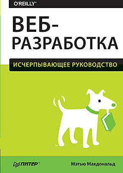

"Веб-разработка. Исчерпывающее руководство"
Автор: Макдональд М.

Эта доступная книга, не перегруженная терминами, расскажет обо всех приемах, инструментах и навыках, необходимых, чтобы создать сайт и запустить его в Вебе.
Характеристики:
- Тема: Веб-разработка
- Год: 2017
- Страниц: 640
- ISBN: 978-5-496-02463-1
Подробное описание:
Можно без труда создать добротный веб-сайт, вооружившись обычным компьютером и некоторыми амбициями. Хотите сделать собственный блог, интернет-магазин, форум, ресурс с рекламой мероприятия? Не проблема! Эта доступная книга, не перегруженная терминами, расскажет обо всех приемах, инструментах и навыках, необходимых, чтобы создать сайт и запустить его в Вебе.